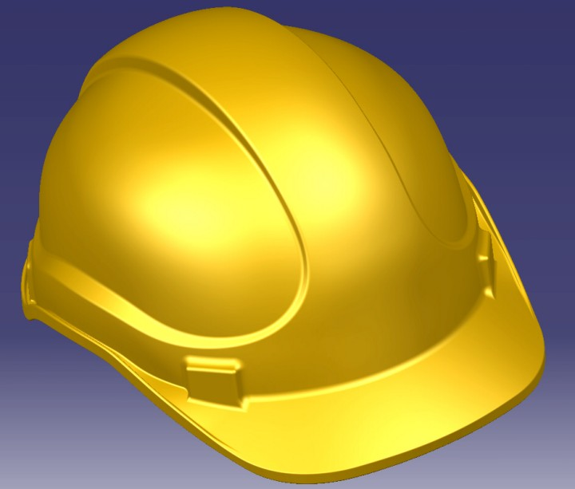
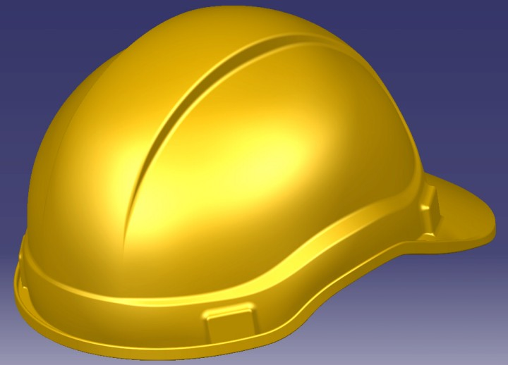
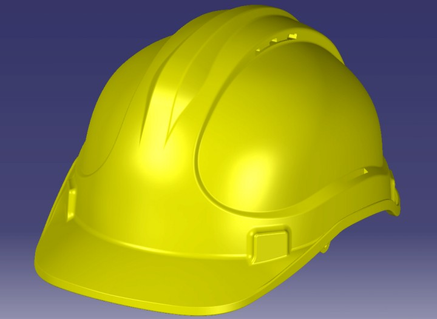
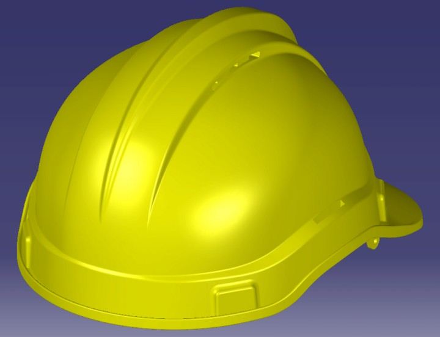
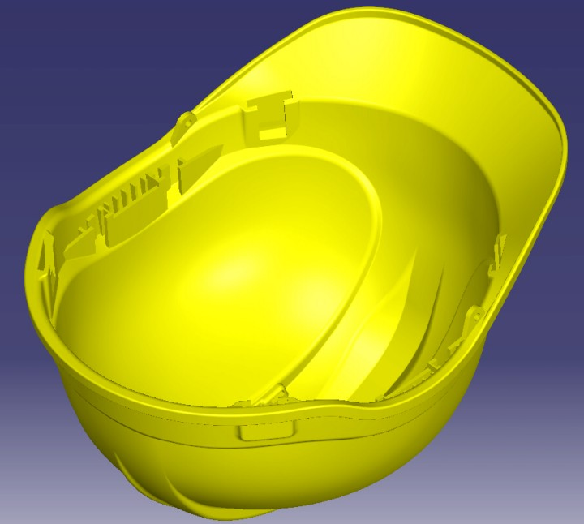
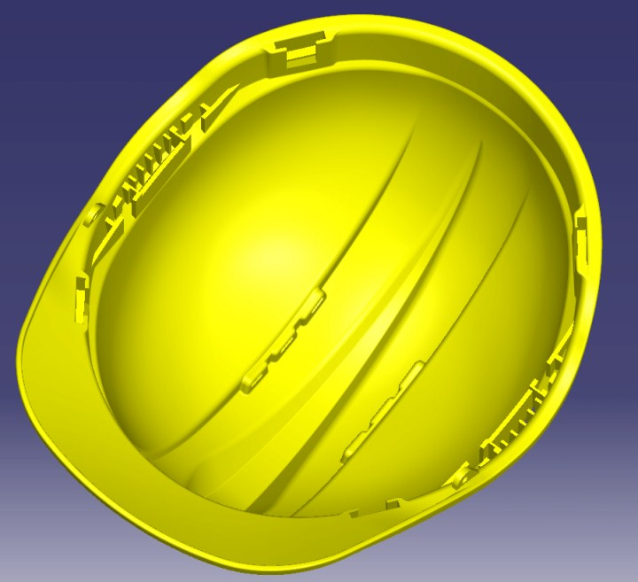

|
CAD Modelleme
Yukarýda deðinilen hazýrlýk iþlemlerinden sonra STL data CATIA'da modellenmeye hazýr hale gelmiþ durumdadýr.
Sýfýrdan modellemeden farklý olarak STL datadan modelleme yapmak hem süre hem de çaba bakýmýndan daha zor bir süreçtir. Müþteri tarafýndan belirlenen toleranslar ve deðiþiklikler bu süreci daha da zorlu hale getirmektedir. Ayrýca bu projede olduðu gibi yüzey kalitesinin yüksek olmasýný gerektiren durumlar daha fazla sabýr, dikkat, deneyim ve bilgi birikimi gerektirmektedir.
STL'den modelleme çalýþmalarýnda, sürecin iþleyiþi bakýmýndan aðýrlýklý olarak CATIA'nýn þu modülleri kullanýlýr:
1. Digitized Shape Editor
2. Quick Surface Reconstruction
3. Generative Shape Design
4. Part Design
Digitized Shape Editor ile Import edilen STL data bu modüldeki çeþitli araçlarla yukarýda bahsedilen hazýrlýk iþlemlerine tabi tutulabildiði gibi harici bir yazýlým yardýmý ile de modellemeye hazýr hale getirilebilir. Bu projede hazýrlýk iþlemlerinin gerçekleþtirilmesinde harici bir yazýlým kullanýlmýþtýr.
Quick Surface Reconstruction modülünde STL üzerinden Section Curve, Feature Curve, 3D Curve gibi eðriler ile ana Primitive ya da Freeform yüzeyler doðrudan elde edilir. Bu eðri ve yüzeyler modellemede doðrudan kullanýlabileceði gibi oluþturulacak yeni eðri ve yüzeylere referans görevi de yapabilirler. Trim hatlarýný ve sýnýrlarý belirlemek için de gene bu modüldeki araçlardan faydalanýlýr. Bu projede de bu modülden alýnan eðri ve yüzeyler modelin formunu, trim hatlarýný ve çeþitli sýnýrlarý belirlemede referans olarak kullanýlmýþtýr.
Generative Shape Design modüllerinde QSR'dan alýnan referans eðri ve yüzeylerden yeni ve daha kaliteli yüzeylerin oluþturulmasý iþlemleri gerçekleþtirilir.
STL'den modelleme projelerinde en çok vakit alan ve en çok uðraþýlan kýsým budur. Oluþturulan bu yüzeylerin hem STL ölçüm datasýna toleranslar dahili içinde oturmasý (ölçü kaçýklýðýnýn düþük olmasý) hem de yüzeyin ve yüzey geçiþlerinin çok iyi olmasý bu süreci zorlaþtýran en büyük etmendir. Doðru ve kabul edilebilir bir sonuç almak deneme-yanýlma ile mümkündür. Dolayýsý ile farklý yüzey komutlarýný, farklý parametre deðerleri girerek defalarca denemek gerekebilir.
Ýstenilen sonuçlar alýndýðýnda gerekli yüzey operasyonlarý (split, trim, join vs. gibi) vasýtasý ile yüzey modellemeye son þekli verilmeye çalýþýlýr.
Oluþturulan yüzey modeli Part Design modülünde katý hale getirilir. Bu aþamadan sonra artýk fiziksel modele ait diðer özellikler (Dress-up features) eklenmeye ve model son haline getirilir.
Bu projenin ilk aþamasýnda birinci baret tipinin modellenmesi yukarýda genel hatlarý ile anlatýlan modelleme yöntemi ile yapýlmýþ buna ek olarak ikinci tip baretin üstündeki kademe müþteri istekleri doðrultusunda modele eklenmiþtir.
Diðer modelleme iþlemlerine göre daha uzun ve zahmetli olan STL'den modelleme projelerinin tamamlanma süreleri genelde gün bazýndadýr. Bu projenin tamamlanmasý yaklaþýk 2 gün almýþtýr. Modelin bitmiþ hali aþaðýdaki resimlerde görülmektedir.

Model 1 ön (CAD)

Model 1 arka (CAD)

Yeni model ön (CAD)

Yeni model arka (CAD)

Yeni model iç 1 (CAD)

Yeni model iç 2 (CAD)
|